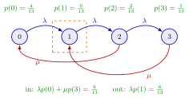

Balance Equations¶
Proposition¶
Let be the number of jobs in a system in which jobs arrive and depart one at a time, and assume the limits defining , the state-dependent arrival rates and the departure rates exist; here is the rate at which jobs leave while are present. Let
where counts the arrivals in that find jobs and the departures that leave jobs behind. Thus counts how often enters state and how often it leaves state . Since entries and exits of one state alternate, , and dividing by and letting gives, for every , the balance equation
For state it reads . When arrivals can be blocked, is replaced by the entry rate .
Interpretation¶
Draw a box around one state and count how often the sample path crosses the box boundary. Every entry into the state is followed by an exit, so in the long run the rate of flow into the state equals the rate of flow out. A balance equation is this statement written with rates times time fractions.

The figure is the batch-service queue of Example 2, with and . State 1 is entered by an arrival from state 0 and by a batch completion from state 3, and it is left only by an arrival, because the server waits until two jobs are present. The flows across the box are in and out.
Level crossing cuts the state space into two parts by a line between two neighbouring states, and such a cut does not always exist, for instance when the state is a vector. A box around one state needs no cut, which is why balance equations carry over to such systems, networks of stations among them. In a birth-death queue nothing new is gained: the balance equation of state is the sum of the level-crossing equations of levels and .
Boundary states need their own equation, because some transitions are missing there. A common slip is to read as in every model. It is a long-run rate measured on the sample path: exponential service times give by the memoryless property, but in the queue the departure rates are in general not equal to (True/False 4.6.4 of the notes).
Key Results¶
- For single-unit transitions and : (equation 4.6.11 of the notes); state gives .
- The counting argument does not need single-unit jumps: for every state, the long-run rate at which the state is left equals the rate at which it is entered. Each term is a transition rate out of a state times the fraction of time in that state.
- In a birth-death queue the balance equations are equivalent to the level-crossing equations , so the stationary-probability recursion solves them.
- With blocking at capacity , the boundary equation is because .
- Together with normalization, the balance equations determine ; they are the tool for queueing networks, where a single cut between two levels does not exist.
Examples¶
1. Balance and level crossing in the barber's shop. The barber of Exercise 5.2.7 is an queue with and per hour, so . For state ,
Both sides agree, and each part also balances separately: and . In the boundary state no customer enters, so its equation is , not .
2. Batch service (Exercise 4.6.9). A single server serves only batches of exactly two jobs; at most 3 jobs fit in the system, jobs arrive as a Poisson process with rate , and batch service times are exponential with rate . Arrivals move the state up by one as long as fewer than 3 jobs are present, so for and (the notes write this entry rate as in this exercise); a batch completion moves the state from to or from to . Balancing each state gives
With this yields , and , as in the level-crossing solution of the notes. For and , , the weights add up to , so . Check state 2: . The simple recursion would be wrong here, because a completion from state 3 crosses two levels at once.
Prerequisites¶
Related Concepts¶
- Birth-Death Queue
- M/M/1/K Queue
- Poisson Arrivals See Time Averages
- Jackson Product Form
- Open Queueing Network
Sources¶
- Stochastic Operations Research · Week 4
- N. D. van Foreest, Sample Path Analysis and Simulation of Stochastic Systems, Section 4.6
Aliases: global balance equations, rate in equals rate out, flow in equals flow out, balance equations of a birth-death queue Keywords: \lambda(n-1)p(n-1)+\mu(n+1)p(n+1)=(\lambda(n)+\mu(n))p(n), I(n,t), O(n,t), transitions in and out of a state, box around a state, boundary state, batch service Symbols: infinity, lambda, mu, rho
Last updated: 29 October 2026 20:42
Balance EquationsJackson Product FormLevel-Crossing EquationStationary-Probability RecursionTime-Average State ProbabilityBirth-Death QueueM/M/1/K QueuePoisson Arrivals See Time AveragesOpen Queueing Network